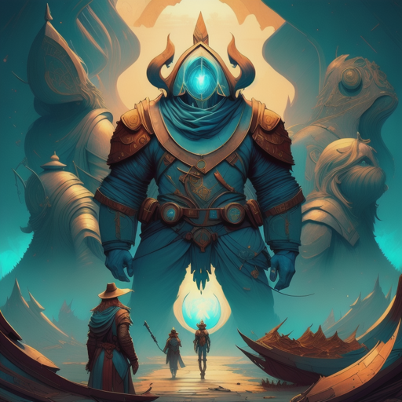

Sara and Jack were committed to their mission. They believed in the importance of safeguarding the ancient artifacts and preventing them from falling into the wrong hands.
Their journey led them to uncover more about the secret organization's history and the true potential of the artifacts. They faced danger at every turn but remained resolute.
Sophie, though worried for her friend, couldn't help but admire their determination and bravery.
As they delved deeper into the secrets of the artifacts, a new revelation emerged: the artifacts held the power to reshape the world, but using that power came at a great cost.
Sara and Jack now had to decide whether to wield this incredible power or protect the world from its potential devastation.
The Reconnection
Choose to use the artifacts' power for a grater good.
Decide to protect the world from the artifacts' potential harm.